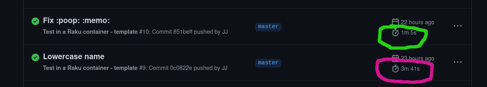

GitHub
Actions (in|for) Raku
JJ Merelo
GitHub Actions are
A flexible workflow execution environment
triggered by repo events
Free for open source repos
Workflows have jobs, which are independent execution
environments
Jobs run sequential steps
Testing your Raku module
on: [ push, pull_request ]
jobs:
test:
runs-on: ubuntu-latest
steps:
- name: Test via install
uses: JJ/raku-test-action@main
This step is properly called an
action See it... in action
Where we can see that it's actually running a
few steps all by itself. This is because...
And we have four types of actions
Container
Shell
Javascript
Composite This is a composite action
name: 'raku-test-action'
description: 'Test raku modules caching dependencies'
branding:
icon: 'life-buoy'
color: 'blue'
runs:
using: "composite"
steps:
- uses: actions/checkout@v2
- name: Cache installed dists
uses: actions/cache@v2
id: meta6
with:
path: ~/.raku/
key: ${{ runner.os }}-${{ hashFiles('META6.json') }}
- name: Test and install for more tests
uses: docker://ghcr.io/jj/raku-zef-ghaWe need the composite action to be able to run several
steps
Steps can beContainers
Other actions
Scripts
Watch our steps
steps:
- uses: actions/checkout@v2 # "Official" action: checks out source
- name: Cache installed dists # "Official" action: caches installed compunits
uses: actions/cache@v2
id: meta6
with:
path: ~/.raku/
key: ${{ runner.os }}-${{ hashFiles('META6.json') }}
- name: Test and install for more tests # Docker container!
uses: docker://ghcr.io/jj/raku-zef-ghaSome improvement?

Zef takes quite a while to install things, over
all if you want to do it with safe testing; this is actually
installing a single dependency, Test::Meta. Improvement will depend
on the amount of modules, but at any rate there will be an improvement.
That's its own little Raku container
Any container?
No, not really
GitHub runs specific commands, in certain
directories, with specific privileges
Our container needs to have
Default user UID 1001
git, tar
availableDeal with $HOME=/home/github
But we can run a whole job inside a container
jobs:
test:
runs-on: ubuntu-latest
permissions:
packages: read
container:
image: ghcr.io/jj/raku-zef-gha
steps:
- name: Checkout
uses: actions/checkout@v2
- name: Cache installed dists
uses: actions/cache@v2
id: meta6
with:
path: ~/.raku/
key: ${{ runner.os }}-${{ hashFiles('META6.json') }}
- name: Test and install for more tests
run: zef install .This is pretty much the same as the external
Action we had, except we're not running a container from an Ubuntu
runner, the Raku container is the runner
Pretty much the same, except you've got more
control...
Install Alpine packages, run some other
stuff
Github Workflows have more
Minimalist text-based API mainly for
communicating with user: errors, warnings
Besides respecting common coventions: a step
fails if its exit status is not zero
Enter Github::Actions
use GitHub::Actions:
say %github; # Contains all GITHUB_xyz variables
set-output('FOO','BAR');
set-output('FOO'); # Empty value
set-env("FOO", "bar");
debug('FOO');
error('FOO');
warning('FOO');Or write steps in Raku
- name: Test output
id: output_test
shell: raku {0}
run:
use GitHub::Actions;
set-output( 'FOO', 'BAR');
Or run external scripts
- name: Generates JSON
run: raku -Ilib scripts/iv-objetivos.raku > data/objetivos.jsonparts of the class analytics done in Raku,
which I'm going to talk about in the other talk
Conclusion
Full control of GitHub actions using Raku
Use ready-made or roll our your own!